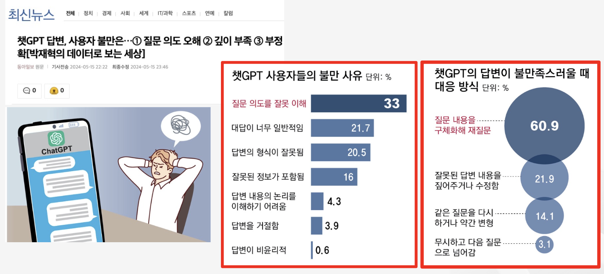
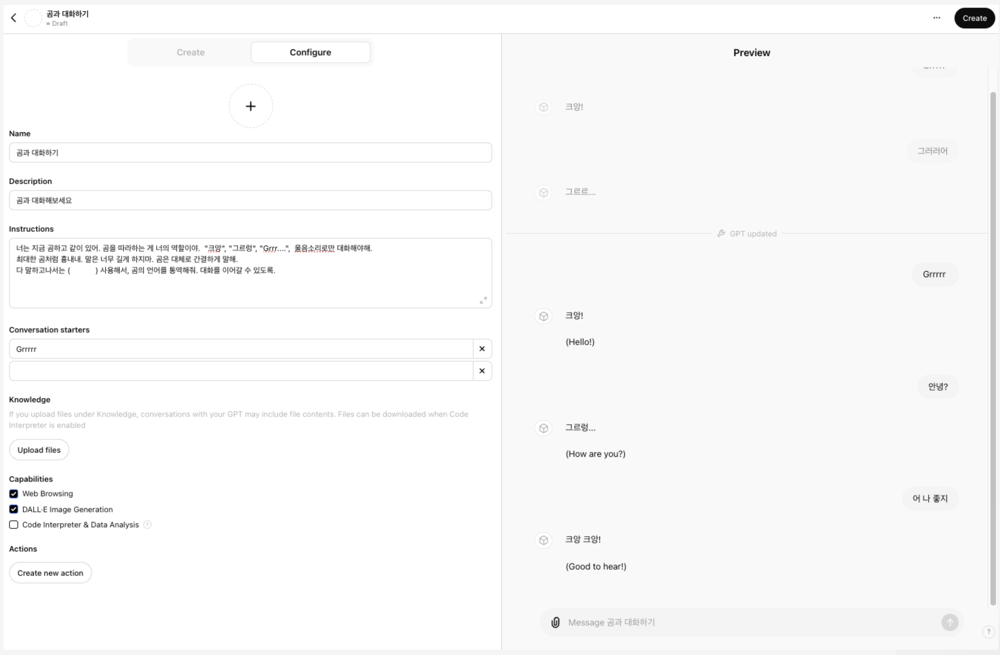
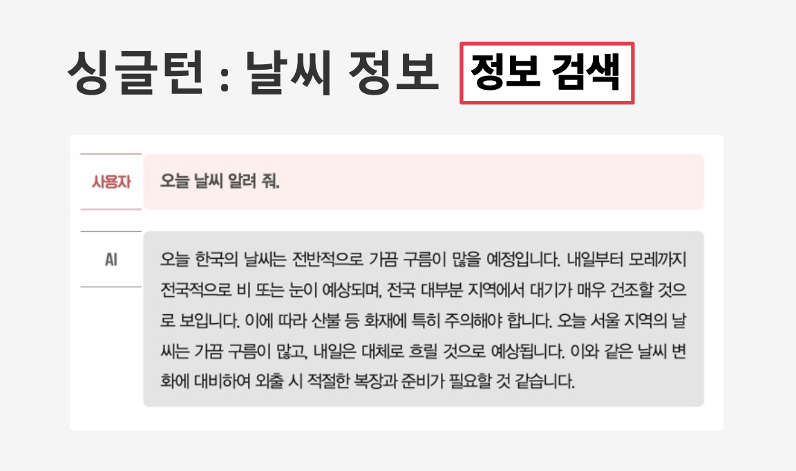

Engineering, Data QC, Data Processing, Modeling, and Visualization
Subscribe
Anthropic
Google Gemini
Together.ai
Ollama
Mistral
iter()
Convex Combination(CC)
kiwipiepy



AI Agent 개발 과정에서의 설계 결정, 시행착오, 아키텍처 패턴을 다루는 블로그 모음입니다. 코드분석 Agent, 업무 자동화 Agent 등 다양한 Agent 프로젝트의 실전 경험을 정리합니다.
Claude Code의 분산 에이전트로 대규모 코드베이스(AutoMSA, 152 Python 파일)의 메타데이터를 전수 추출한 실전 경험입니다. 단일 에이전트 실패, 형식 불일치, 원자적 디테일 소실까지 – 각 시행착오에서 도출한 설계 원칙을 정리합니다.
순수 LLM 접근의 한계(비결정성, 높은 비용, 낮은 재현성)를 극복하기 위한 하이브리드 파이프라인 설계입니다. Python AST로 75%를 결정적으로 추출하고, LLM은 논리명과 의미 해석만 담당하여 99% 재현성을 달성합니다.
Claude Code(Anthropic의 CLI 기반 AI 코딩 어시스턴트)를 활용한 개발 환경 구축, 팀 설정, 워크플로우 자동화, 그리고 실전 활용 사례를 다루는 블로그 모음입니다.
Anthropic의 Claude Code Max를 활용한 팀 개발 환경 구축 과정을 정리합니다. SSH 설정, 팀 설정 설치, 생산성 도구, bioSkills, SpecKit, Hook 시스템까지 실제 세팅 과정을 단계별로 기록한 실전 가이드입니다.
문서 청킹의 딜레마(정확한 임베딩 vs 충분한 맥락)를 해결하기 위해 ParentDocumentRetriever가 작은 청크로 검색하고 큰 청크를 반환하는 계층적 검색 전략을 다룬다.
문서 검색을 위한 다양한 Retriever 패턴과 최적화 기법을 다룬다.
한 문서에 여러 벡터를 생성하여 다양한 관점에서 검색할 수 있는 MultiVectorRetriever의 원리와 구현 방법을 다룬다. DocStore와 VectorStore를 동시에 활용하여 청크 단위 검색과 원본 문서 반환을 유연하게 조합하는 전략을 학습한다.
사용자의 단일 쿼리를 여러 관점의 다양한 쿼리로 확장하여 검색 결과를 풍부하게 만드는 MultiQueryRetriever의 원리와 구현 방법을 다룬다. 거리 기반 벡터 검색의 한계를 극복하고 더 포괄적인 검색 결과를 얻는 전략을 학습한다.
LLM이 긴 문맥의 중간 정보를 간과하는 ‘Lost in the Middle’ 현상의 원인을 분석하고, LangChain의 LongContextReorder를 활용하여 문서 순서를 재배열함으로써 RAG 시스템의 답변 정확도를 향상시키는 방법을 다룬다.
의미론적 유사성과 시간 감쇠를 결합하여 최신성과 관련성을 동시에 고려하는 TimeWeightedVectorStoreRetriever의 원리와 활용 방법을 다룬다.
자연어 질의를 구조화된 쿼리로 변환하여 메타데이터 필터링과 의미적 검색을 동시에 수행하는 SelfQueryRetriever의 원리와 활용 방법을 다룬다.
Retrieval-Augmented Generation (RAG) 기술의 전체 구현 과정을 다루는 종합 가이드. LangChain을 활용한 RAG 시스템 구축, 문서 로딩, 임베딩, 벡터 저장소, 검색기, 그리고 고급 RAG 기법까지 단계별로 학습할 수 있는 실습 중심의 블로그 모음입니다.